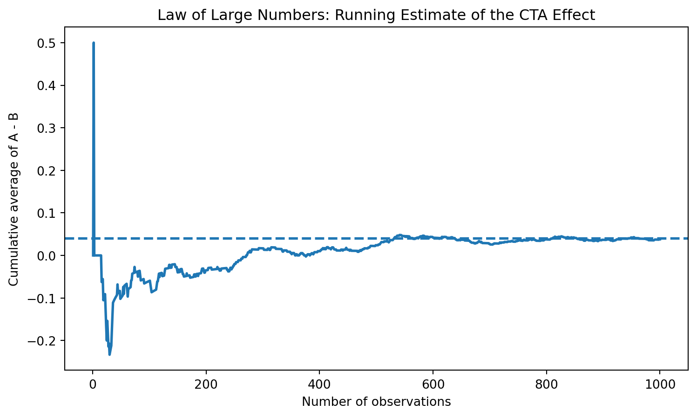
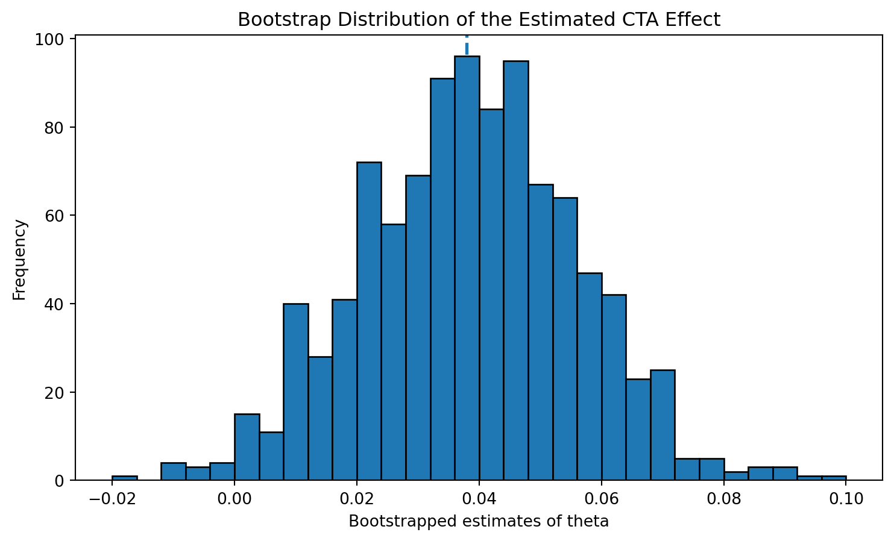
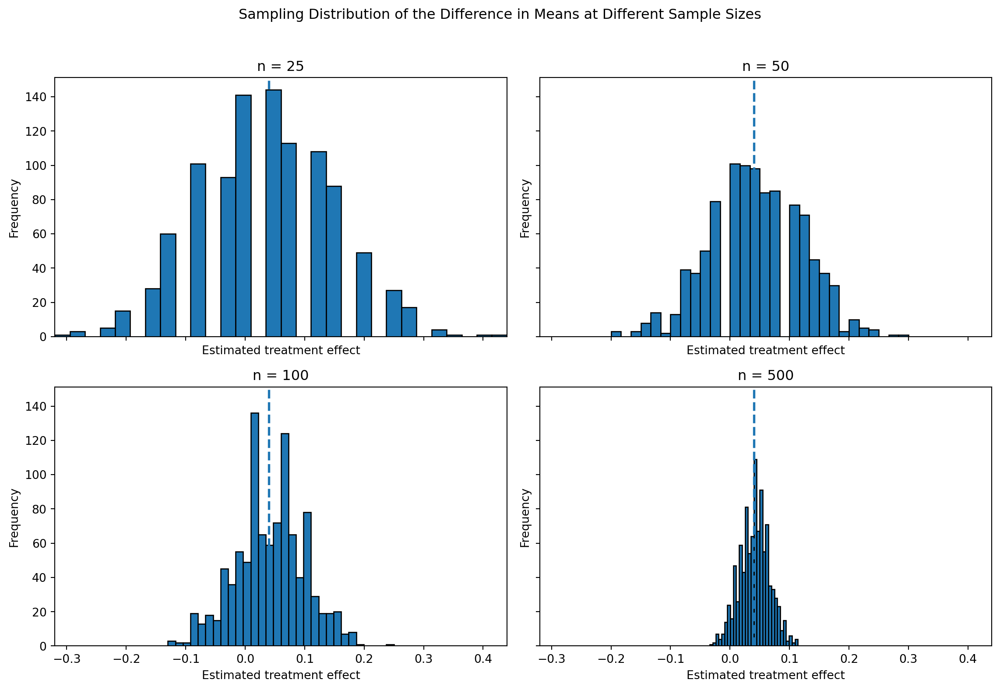
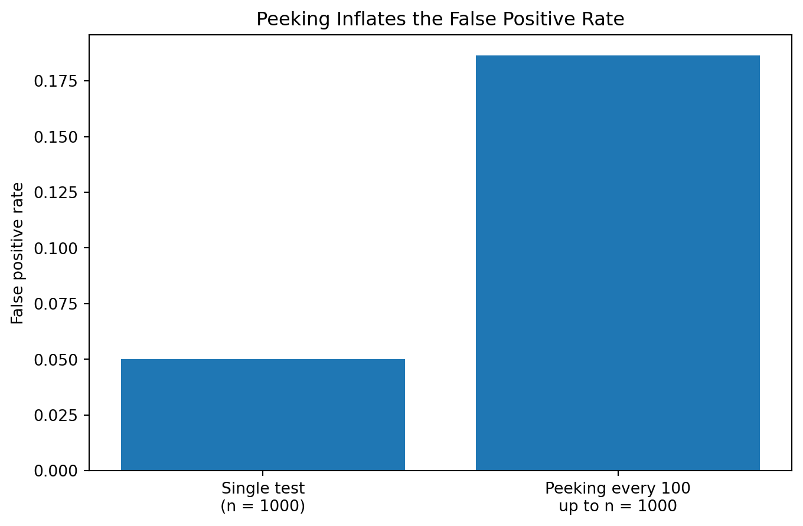

Simulating Key Ideas from Classical Frequentist Statistics
Author
Joyi Zhang
Published
April 15, 2026
Introduction
Suppose you run a website with a landing page that invites visitors to subscribe to your newsletter. One small design choice on that page is the call to action (CTA): the short line of text that asks users to sign up. Even small changes in wording can affect behavior, so it is natural to ask which version of the CTA leads to more newsletter subscriptions.
In this post, I compare two possible CTAs. CTA A reads, “Sign up for our newsletter here!” and CTA B reads, “Stay up to date by signing up!” To evaluate which message performs better, I use an A/B test. In an A/B test, visitors are randomly assigned to one of two versions of a page or feature, and the outcomes in the two groups are compared. Here, the outcome is whether a visitor signs up for the newsletter. This simple setup provides a useful way to introduce several core ideas from classical frequentist statistics, including estimation, the Law of Large Numbers, the bootstrap, the Central Limit Theorem, and hypothesis testing.
The A/B Test as a Statistical Problem
To study this A/B test statistically, I model each visitor’s outcome as a Bernoulli random variable. For any individual visitor, there are only two possible outcomes: either they sign up for the newsletter or they do not. If I code a sign-up as 1 and a non-sign-up as 0, then each observation can be thought of as a draw from a Bernoulli distribution with parameter \(\pi\), where \(\pi\) is the probability of signing up.
Because the CTA may influence user behavior, I allow the sign-up probability to differ across the two groups. Let \(\pi_A\) denote the probability that a visitor signs up after seeing CTA A, and let \(\pi_B\) denote the probability of signing up after seeing CTA B. The main quantity of interest is the difference between these two probabilities,
\[
\theta = \pi_A - \pi_B.
\]
If \(\theta > 0\), CTA A performs better on average. If \(\theta < 0\), CTA B performs better. If \(\theta = 0\), then the two CTAs perform equally well.
In practice, the true probabilities \(\pi_A\) and \(\pi_B\) are unknown, so we estimate them using sample averages. Since each observation is either 0 or 1, the sample mean is simply the sample proportion of sign-ups. That means our estimator for the treatment effect is
\[
\hat{\theta} = \bar{X}_A - \bar{X}_B,
\]
where \(\bar{X}_A = \hat{\pi}_A\) is the observed sign-up rate in group A and \(\bar{X}_B = \hat{\pi}_B\) is the observed sign-up rate in group B. This difference in sample means will be the central object throughout the rest of the analysis.
Simulating Data
Simulating Data
In a real A/B test, we would not know the true values of \(\pi_A\) and \(\pi_B\). We would only observe a sample of user outcomes and try to learn about the underlying sign-up probabilities from that sample. For this exercise, however, it is helpful to set the true probabilities ourselves so that we can evaluate how well our statistical tools recover the truth.
Suppose the true sign-up probability is \(\pi_A = 0.22\) for CTA A and \(\pi_B = 0.18\) for CTA B. Then the true difference is
\[
\theta = \pi_A - \pi_B = 0.04.
\]
I now simulate 1,000 visitors in each group. Each simulated visitor either signs up (1) or does not sign up (0), according to the Bernoulli distribution for that group.
Because the data are randomly simulated, the observed sign-up rates will not be exactly 0.22 and 0.18 in every run. Still, with 1,000 observations per group, they should typically be fairly close. The observed difference in sample means, \(\hat{\theta}\), is my estimate of the true treatment effect of 0.04.
The Law of Large Numbers
The Law of Large Numbers says that as the sample size grows, the sample mean converges to the population mean. In this setting, that idea matters because our estimator is built from sample means: \(\hat{\theta} = \bar{X}_A - \bar{X}_B\). If the sample size is large enough, we should expect this estimator to get closer to the true difference in sign-up probabilities.
To visualize this, I compute the element-wise difference between the simulated outcomes in group A and group B, producing a sequence of 1,000 differences. I then calculate the cumulative average of that sequence. This running mean shows how the estimate evolves as more and more observations are included.
import matplotlib.pyplot as pltdiff = A - Brunning_mean = np.cumsum(diff) / np.arange(1, n +1)plt.figure(figsize=(9, 5))plt.plot(np.arange(1, n +1), running_mean, linewidth=2)plt.axhline(theta_true, linestyle="--", linewidth=2)plt.xlabel("Number of observations")plt.ylabel("Cumulative average of A - B")plt.title("Law of Large Numbers: Running Estimate of the CTA Effect")plt.show()

At the beginning of the plot, the running average moves around quite a bit. That is exactly what we should expect: with only a small number of observations, random variation has a large influence on the estimate. As the sample size increases, however, the cumulative average becomes more stable and moves closer to the true value of 0.04.
The main takeaway is that noisy early results do not necessarily mean the estimator is unreliable. Instead, they reflect the fact that small samples are inherently variable. As more observations accumulate, random fluctuations begin to average out, and the estimate settles down. This is the practical value of the Law of Large Numbers in A/B testing: large samples make our estimates more trustworthy.
Bootstrap Standard Errors
Bootstrap Standard Errors
Once I have a point estimate of the treatment effect, the next question is how precise that estimate is. A single number such as \(\hat{\theta}\) tells me the estimated difference in sign-up rates, but it does not tell me how much uncertainty surrounds that estimate. To quantify that uncertainty, I need a standard error and, ideally, a confidence interval.
One useful way to estimate uncertainty is the bootstrap. The bootstrap is a resampling method that approximates the sampling variability of a statistic using the observed data itself. The basic idea is simple: repeatedly sample with replacement from the original data, recompute the statistic of interest for each resample, and then look at how much those resampled estimates vary. If the bootstrap estimates vary a lot, then the original estimator is not very precise; if they vary only a little, then the estimator is more stable.
Here, I repeatedly resample 1,000 observations from group A and 1,000 observations from group B, each time with replacement. For each bootstrap sample, I compute the difference in sample means, \(\hat{\theta}^* = \bar{X}_A^* - \bar{X}_B^*\). After repeating this process 1,000 times, I use the standard deviation of the 1,000 bootstrapped estimates as the bootstrapped standard error.
plt.figure(figsize=(9, 5))plt.hist(boot_thetas, bins=30, edgecolor="black")plt.axvline(theta_hat, linestyle="--", linewidth=2)plt.xlabel("Bootstrapped estimates of theta")plt.ylabel("Frequency")plt.title("Bootstrap Distribution of the Estimated CTA Effect")plt.show()

The bootstrap standard error and the analytical standard error should be quite close. That is reassuring, because it suggests that the bootstrap is capturing the same underlying uncertainty as the closed-form formula. In this setting, the analytical standard error is available because the data are Bernoulli, but the bootstrap is especially useful more generally when a closed-form expression is difficult or unavailable.
Using the bootstrapped standard error, I construct a 95% confidence interval for \(\theta\) as \(\hat{\theta} \pm 1.96 \times SE_{boot}\). This interval gives a range of plausible values for the true difference in sign-up rates. If the interval excludes 0, that suggests the data are consistent with a real difference between the two CTAs. If it includes 0, then the observed difference may simply reflect sampling variation.
The main idea is that point estimates alone are not enough. In A/B testing, it is just as important to report how uncertain the estimate is as it is to report the estimate itself.
The Central Limit Theorem
:## The Central Limit Theorem
The Law of Large Numbers tells us that our estimator converges toward the truth as the sample size grows. The Central Limit Theorem adds another important piece: it tells us what the distribution of the estimator looks like across repeated samples. Even when the underlying data are not Normally distributed, the sampling distribution of the sample mean becomes approximately Normal when the sample size is large enough. Since my estimator is the difference between two sample means, the same idea applies here as well.
This matters because much of classical frequentist inference relies on approximate Normality. If the sampling distribution of \(\hat{\theta}\) is approximately bell-shaped, then I can use that fact to build confidence intervals and perform hypothesis tests.
sample_sizes = [25, 50, 100, 500]sim_results = {}for sample_n in sample_sizes: theta_hats = []for _ inrange(1000): A_sim = np.random.binomial(1, pi_A, sample_n) B_sim = np.random.binomial(1, pi_B, sample_n) theta_hats.append(A_sim.mean() - B_sim.mean()) sim_results[sample_n] = np.array(theta_hats)fig, axes = plt.subplots(2, 2, figsize=(12, 8), sharex=True, sharey=True)x_min =min(arr.min() for arr in sim_results.values())x_max =max(arr.max() for arr in sim_results.values())for ax, sample_n inzip(axes.flatten(), sample_sizes): ax.hist(sim_results[sample_n], bins=30, edgecolor="black") ax.axvline(theta_true, linestyle="--", linewidth=2) ax.set_title(f"n = {sample_n}") ax.set_xlim(x_min, x_max) ax.set_xlabel("Estimated treatment effect") ax.set_ylabel("Frequency")plt.suptitle("Sampling Distribution of the Difference in Means at Different Sample Sizes", y=1.02)plt.tight_layout()plt.show()

These four histograms show the sampling distribution of \(\hat{\theta}\) under repeated sampling for different sample sizes. When the sample size is small, the histogram can look rough, irregular, and somewhat asymmetric. That is not surprising: with only a small number of Bernoulli draws, the estimator can take on only a limited set of values, and randomness has a stronger visible effect.
As the sample size increases, the distribution becomes smoother, more concentrated, and more bell-shaped. By the time the sample size reaches 500, the distribution looks much closer to a Normal distribution. This is the Central Limit Theorem in action.
The practical takeaway is that large-sample inference becomes much more reliable because the distribution of the estimator is approximately Normal. That is exactly what will justify the z-based hypothesis test in the next section.
Hypothesis Testing
Hypothesis Testing
The Central Limit Theorem gives us a practical way to move from estimation to formal inference. Once we know that the sampling distribution of \(\hat{\theta}\) is approximately Normal in large samples, we can ask whether the observed difference between the two CTAs is large enough to count as evidence against the idea that the CTAs perform the same.
To formalize that question, I set up the null hypothesis
\[
H_0: \theta = 0,
\]
which says that the two CTAs have the same true sign-up rate. The alternative hypothesis is
\[
H_1: \theta \neq 0,
\]
which says that the two CTAs differ. A hypothesis test asks whether the observed data would be unusual if the null hypothesis were true.
To answer that question, I standardize the estimated treatment effect using its standard error:
\[
z = \frac{\hat{\theta} - 0}{SE(\hat{\theta})}.
\]
This standardization step has a clear logic. First, by the Central Limit Theorem, \(\hat{\theta}\) is approximately Normally distributed when the sample size is large. Second, under the null hypothesis, that distribution is centered at 0. Third, dividing by the standard error rescales the statistic into units of standard deviations, so under the null the resulting test statistic is approximately standard Normal, \(N(0,1)\). Once I know the null distribution of the test statistic, I can compute a p-value.
This procedure is sometimes loosely called a t-test, but in this setting it is more accurate to think of it as a large-sample z-test. The classical t-test comes from a setting where the data are Normally distributed and the variance is estimated from the sample, leading to an exact t-distribution. Here the data are Bernoulli, not Normal, so there is no exact t-distribution result. Instead, the Central Limit Theorem gives an approximate Normal reference distribution. In large samples the t-distribution and the standard Normal are extremely similar, so the practical difference is small, but the distinction is conceptually important.
The sign of the test statistic tells me the direction of the estimated effect. A positive value means that CTA A outperformed CTA B in the simulated sample, while a negative value would mean the opposite. The p-value measures how surprising an estimate this large would be if the null hypothesis of no true difference were correct.
If the p-value is small, that means the observed difference would be unlikely under \(H_0\), giving evidence against the null. If the p-value is not small, then the data do not provide strong enough evidence to rule out the possibility that the observed difference is just random sampling variation. In this simulation, because the true treatment effect is positive, I would generally expect to see a positive test statistic and often a fairly small p-value, though the exact result depends on the random draw.
The T-Test as a Regression
The T-Test as a Regression
It turns out that the two-sample comparison above can also be written as a simple linear regression. This is more than a mathematical curiosity. It shows that the same general regression machinery used throughout applied statistics can also be used to analyze A/B tests, and it explains why regression becomes such a flexible framework for experimental data.
To set this up, I stack the two groups into a single dataset. For each visitor, I define an outcome variable \(Y_i\) that equals 1 if the visitor signed up and 0 otherwise. I also define an indicator variable \(D_i\) that equals 1 if the visitor saw CTA A and 0 if the visitor saw CTA B. I then fit the regression
The interpretation of the coefficients is straightforward. When \(D_i = 0\), the regression becomes \(Y_i = \beta_0 + \varepsilon_i\), so \(\beta_0\) is the mean outcome in group B and therefore estimates \(\pi_B\). When \(D_i = 1\), the expected outcome is \(\beta_0 + \beta_1\), which is the mean outcome in group A and therefore estimates \(\pi_A\). That means \(\beta_1\) must equal the difference in group means, \(\pi_A - \pi_B = \theta\). As a result, the OLS estimate \(\hat{\beta}_1\) is numerically identical to the difference-in-means estimator \(\hat{\theta}\).
The estimated coefficient on the treatment indicator should match the difference in sample means from the previous section exactly, because they are algebraically the same quantity. The associated test statistic and p-value should also be very close to the earlier two-sample results. Any small differences typically come from how the standard error is computed. In the earlier section, I used the separate-variance formula for two Bernoulli samples, while standard OLS uses its own variance assumptions unless a robust adjustment is applied.
This equivalence matters because regression provides a natural way to extend the basic A/B test. In more realistic settings, I might want to control for device type, traffic source, or returning versus new users. I might also want to include interaction terms or compare more than two treatment arms. Regression handles all of those extensions while reducing to the same difference-in-means logic in the simple two-group case.
The Problem with Peeking
In practice, one of the biggest temptations in A/B testing is to check the results before the experiment is finished. Suppose an impatient manager wants to look at the data after every 100 visitors in each group and stop the test as soon as the result becomes statistically significant at the \(\alpha = 0.05\) level. At first glance, this may seem harmless. After all, each individual test is using the same 5% significance threshold.
The problem is that classical frequentist guarantees are built around a pre-specified testing procedure. A single hypothesis test conducted once at the end of the experiment has a 5% Type I error rate under the null. But if I repeatedly test the data as they accumulate, each additional peek creates another opportunity to get a false positive. The overall probability of rejecting the null at least once becomes much larger than 5%.
To see this clearly, I simulate a world in which the null hypothesis is actually true. I set \(\pi_A = \pi_B = 0.20\), so there is no real difference between the two CTAs. Then, within each simulated experiment, I check the p-value after 100, 200, 300, and so on up to 1,000 observations per group. If any one of those ten hypothesis tests is significant at the 5% level, I count that experiment as producing a false positive.
plt.figure(figsize=(8, 5))plt.bar( ["Single test\n(n = 1000)", "Peeking every 100\nup to n = 1000"], [0.05, peeking_false_positive_rate])plt.ylabel("False positive rate")plt.title("Peeking Inflates the False Positive Rate")plt.show()

The simulation usually shows that the false positive rate under peeking is substantially larger than the nominal 5% level. Even though each individual test uses \(\alpha = 0.05\), the repeated testing strategy changes the overall procedure. Looking at the data multiple times without adjustment means that I am no longer running “a 5% test” in the usual sense.
This is the key lesson: statistical significance is not guaranteed to mean the same thing when the stopping rule is allowed to depend on the observed results. A result that appears significant after repeated peeking may simply be the product of chance rather than evidence of a real treatment effect.
In practice, this means that A/B tests should ideally use a pre-committed sample size and analysis plan, or else use methods specifically designed for sequential monitoring. Without those safeguards, repeated peeking can make experiments look more decisive than they really are.